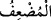
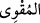
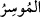
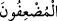

veren kimse alana: “Ben bu malı sana faiz olarak vermiyorum. Onu sana helâl
ediyorum.” dese de helâl olmaz ve fâizlikten çıkmaz. Çünkü Allah Teâlâ’nın haram
kılmasıyla haram olan bir şey, başkasının helâl kılmasıyla helâl olmaz. Fâiz veren de
alan da tehdid konusunda eşittir. Ancak, karşılıksız olarak hiç kimsenin kendisine borç
vermemesi sûretiyle fâiz yoluyla almaktan başka bir çare bulamamışsa veren tarafında
güçlü bir zarûret olması müstesnâ.
Sırf “Allâh’ın rızâsını” yâni riyâ ve süm‘a olarak başkasının sevâbını ve rızâsını
değil de O’nun sevâbını ve rızâsını “isteyerek verdiğiniz” farz kılınan “zekâta” veya
sadakaya -sadakaya ‘zekât’ denilmesi malı artırıp çoğaltması sebebiyledir- “gelince,
işte zekâtı veren o kimseler, evet onlar (sevaplarını ve mallarını) kat kat
arttıranlardır.” Yâni kat kat sevâbın sâhipleridirler. Nitekim Allah Teâlâ: “Sadakaları
artırıp bereketlendirir.” (el-Bakara, 2/276) buyurmuştur. “__WORD__ (kat kat arttıran)”
kelimesinin benzeri, güç kuvvet sâhibi için “__WORD__, bolluk/zenginlik sâhibi için “__WORD__
kelimeleridir. Ya da “__WORD__ zekâtın bereketi ile sevablarını ve mallarını katlayanlar
demektir.
“Evet onlar (sevaplarını ve mallarını) kat kat arttıranlardır.” buyrularak
hitaptan/ikinci şahıs ifâdesinden üçüncü şahıs ifâdesine geçilmesi, bu ifâdenin sadece
muhataplara tahsis edilmediğine, bilakis onun kıyâmete kadar gelecek bütün mükellefler
için genel olduğuna işâret etmek içindir.
Sehl (r.h.) şöyle demiştir: “Kat kat arttırma zekât vermekten dolayı değil, onunla
Allâh’ın rızâsını istemekten dolayı vâki olmuştur. Bedenin zekâtı günahlardan, malın
zekâtı da şüpheli şeylerden temizlemektedir.”
et-Te’vîlâtü’n-Necmiyye’de der ki: “Malı Allah yolunda infak edilmenin nefsin dünyâ
sevgisi pisliğinden tezkiye edip arındırmak olduğuna işâret etmektedir. Tıpkı Ebû Bekir
(r.a.)’ın durumunda olduğu gibi. O nefsini tezkiye için bütün malını elinden çıkarmıştı.
Nitekim Allah Teâlâ onun durumunu şöyle haber vermektedir: “En çok korunan/takvâ
sâhibi olan da ondan (ateşten) uzak tutulur. O ki, Allah yolunda malını verir,
temizlenir. Onun nezdinde hiçbir kimseye âid şükranla karşılanacak bir nîmet
yoktur. O ancak Yüce Rabbinin rızâsını aramak için verir. Yalnız yüce Rabbinin
rızâsı için” yâni Rabbi ile buluşmanın şevkiyle “verir.” (el-Leyl, /17-20)
“Evet onlar (sevaplarını ve mallarını) kat kat arttıranlardır.” Yâni kendilerine
umduklarının ve temennî ettiklerinin kat kat fazlası verilenlerdir. Çünkü onlar
himmetleri kadar ve kendi hâdis düşüncelerine göre umarlar. Allah Teâlâ ise kadîm
ihsan ve keremine göre kesintisiz olarak verir.”
Bilesin ki mal, insanın eline verilmiş geçici bir emânettir. Allah infak edene
karşılığını vermeye kefil olduğu halde elinde kalıcı olmayan bu malla kendisini devamlı
azabdan kurtarmayan kimseden daha câhil birisi yoktur.
Mesnevî’de der ki: